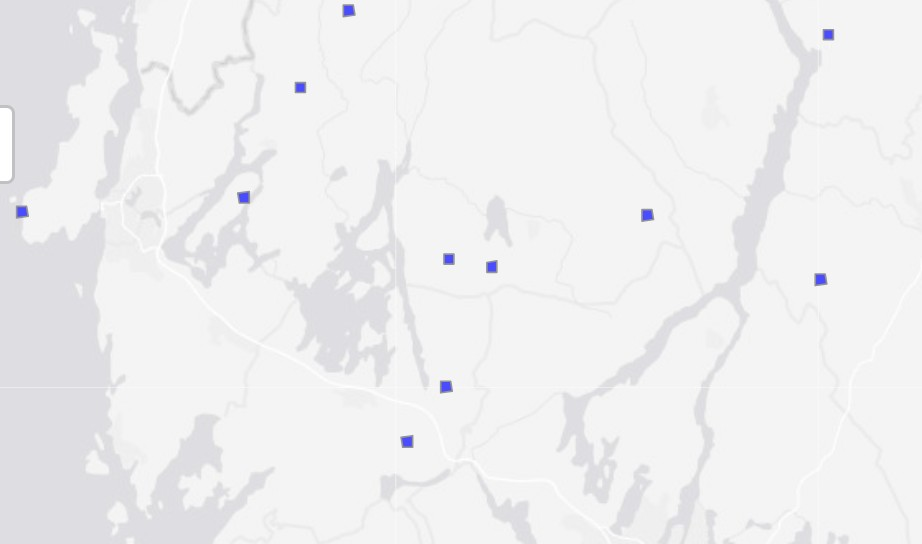

Overview
Now that we have added data to the database, we can also read it back.
coast_sample <- dplyr :: tbl ( con , dbplyr :: in_schema ( "sampling_frames" , "samplingframe_havstrand_2024" ) ) coast_sample
# Source: SQL [?? x 2]
# Database: postgres [anders.kolstad@t2lippgsql03:5432/ano_moduler]
havstrand_id ssbid
<chr> <chr>
1 4de8478a-d2c8-4730-83dd-12ac25d4fa07 22495006594500
2 bc9a80d7-c434-47e9-a89a-7f7a3f59f625 22495006595000
3 ce7166b6-cb49-499a-a99f-9da0e274abd8 22495006595500
4 e56036c5-7fe4-461a-a022-44367119acac 22495006596000
5 1f592dac-2fb7-49e5-9aa9-fc0cf9e9184f 22490006596500
6 20394fe8-305c-4c39-add9-f013295ca932 22495006596500
7 3d3ffe94-0400-4c1c-9a0f-62f4d6c29c4d 22490006597000
8 4d199401-dd20-48ef-b6c6-8de00b9eb9a4 22495006597000
9 a34df6f4-8f92-4976-b7ae-94b176fa73b1 22625006542000
10 89e8296e-e076-4519-b916-60c5ef922292 22625006542500
# ℹ more rows
Same for the wetlands samples:
vaatmark_2025 <- dplyr :: tbl ( con , dbplyr :: in_schema ( "samples" , "vaatmark_2025" ) )
Collect and join data
This data only exists remotely still. We need to use collect to bring it down to our local machine. At the same time we can use dplyr pipelines to filter the data.
coast_sample |> dplyr :: mutate ( id = row_number ( ) ) |>
dplyr :: slice_min ( n = 8 , order_by = id ) |>
dplyr :: collect ( )
# A tibble: 8 × 3
havstrand_id ssbid id
<chr> <chr> <int64>
1 4de8478a-d2c8-4730-83dd-12ac25d4fa07 22495006594500 1
2 bc9a80d7-c434-47e9-a89a-7f7a3f59f625 22495006595000 2
3 ce7166b6-cb49-499a-a99f-9da0e274abd8 22495006595500 3
4 e56036c5-7fe4-461a-a022-44367119acac 22495006596000 4
5 1f592dac-2fb7-49e5-9aa9-fc0cf9e9184f 22490006596500 5
6 20394fe8-305c-4c39-add9-f013295ca932 22495006596500 6
7 3d3ffe94-0400-4c1c-9a0f-62f4d6c29c4d 22490006597000 7
8 4d199401-dd20-48ef-b6c6-8de00b9eb9a4 22495006597000 8
We can also get the geometries, which are stored in the foreign table. To do this we can use the dm package.
We first create a dm object from the connection object. Then we can view data easily.
dm <- dm :: dm_from_con ( con , table_names = c (
"ssb_500" ,
"vaatmark_2025"
) ,
learn_keys = T
) dm
── Table source ────────────────────────────────────────────────────────────────
src: postgres [anders.kolstad@t2lippgsql03:5432/ano_moduler]
── Metadata ────────────────────────────────────────────────────────────────────
Tables: `ssb_500`, `vaatmark_2025`
Columns: 495
Primary keys: 2
Foreign keys: 1
DM learns the relationships between tables by reading the constraints. First I can check that the amount of constraints is good.
# A tibble: 1 × 5
child_table child_fk_cols parent_table parent_key_cols on_delete
<chr> <keys> <chr> <keys> <chr>
1 vaatmark_2025 ssbid ssb_500 ssbid no_action
Then we can read the data back, including the geometries from the parent table. The geometries are stores (or at least returned) as hex-encoded WKB/EWKB, and we need to convert then to sfc first, before we can turn them into sf.
dm2 <- dm |> dm :: dm_flatten_to_tbl ( vaatmark_2025 ,
.recursive = TRUE ) |>
mutate ( geom_wkb = dbplyr :: sql ( "ST_AsBinary(geom)" ) ) |>
select ( - geom ) |>
collect ( ) |>
mutate ( geom = sf :: st_as_sfc ( geom_wkb , crs = 25833 ) ) |>
sf :: st_as_sf ( sf_column_name = "geom" )
path <- "/data/Egenutvikling/41001581_egenutvikling_anders_kolstad/ANO" st_write ( dm2 , paste0 ( path , "/vaatmark_2025.gpkg" ) , append = FALSE )
dm2 |> select ( ssbid , geom , `300` ) |>
drop_na ( `300` ) |>
slice_head ( n = 1000 ) |>
tm_shape ( ) + tm_polygons ( col = "blue" )

Collect bioclimatic dataset
bc <- dplyr :: tbl ( con , dbplyr :: in_schema ( "helper_variables" , "bioclimatic_regions" ) )
bc <- bc |> mutate ( geom_wkb = dbplyr :: sql ( "ST_AsBinary(geom)" ) ) |>
select ( - geom ) |>
collect ( ) |>
mutate ( geom = sf :: st_as_sfc ( geom_wkb , crs = 25833 ) ) |>
sf :: st_as_sf ( sf_column_name = "geom" )
#class(bc) unique ( bc $ BCregion ) bc2 <- bc |> group_by ( BCregion ) |>
summarise ( )
reg <- unique ( bc2 $ BCregion ) bc2 <- bc2 |> mutate ( BCregion = case_when (
BCregion == reg [ 1 ] ~ 2 ,
BCregion == reg [ 2 ] ~ 1 ,
BCregion == reg [ 3 ] ~ 3 ,
BCregion == reg [ 4 ] ~ 5 ,
BCregion == reg [ 5 ] ~ 7 ,
BCregion == reg [ 6 ] ~ 6 ,
BCregion == reg [ 7 ] ~ 4 ,
BCregion == reg [ 8 ] ~ 8 ,
BCregion == reg [ 9 ] ~ 4 ,
BCregion == reg [ 10 ] ~ 9 ,
BCregion == reg [ 11 ] ~ 1 ,
BCregion == reg [ 12 ] ~ 7 ,
) ) |>
group_by ( BCregion ) |>
summarise ( )
tmap_mode ( "plot" ) pal <- tmaptools :: get_brewer_pal ( "Accent" , n = 9 , stretch = FALSE ) map <- bc2 |> tm_shape ( ) +
tm_polygons ( col= "BCregion" , style= "cat" , palette = pal , lwd= 0 )
tmap_save ( map , "img/bcMap.png" )